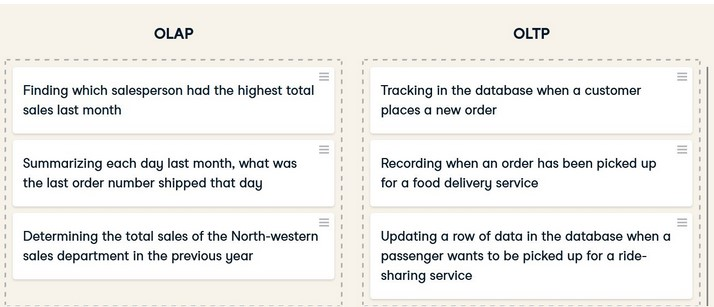

Datawarehouse part 1
1)What is a datawarehouse?
In simplest terms,
A data warehouse is a computer system designed to store and analyze large amounts of data for an organization.
2)What does a datawarehouse do?
A data warehouse gathers data from different areas of an organization, such as Engineering, Legal, or Operations.
Then it integrates and stores that data and makes it available for analysis.
Similar to how a physical warehouse stores items and goods so that they are available to use later.
3)What makes a datawarehouse valuable enough that an organization will invest time and money in creating one?
Organizations implement data warehouses to support business intelligence activities,
such as deriving key performance indicators.
Analysts, Data Citizens, Data Scientists,
and anyone else who needs to analyze the organization uses the data
from the data warehouse as inputs for their analysis.
Their analyses lead to organizational decision-making,
with the goal of finding ways to innovate based on insights from their data.
To better understand these concepts, let's look at an example.
A hypothetical publicly traded company that sells fancy home office furniture.
Let's explore some common scenarios where its employees might utilize a data warehouse.
1)It might utilize its data warehouse for
product forecasting.
Their data warehouse aggregates their historical sales by customer and product,
which is needed to forecast future demand.
2)In addition, it has specific regulations and
governance it must adhere to as a publicly traded company.
it's employees could
prepare reports from the data warehouse to provide to auditors.
3)The data warehouse could be used
to confirm it's adherence to the rules because the
data warehouse is a store of financial transactions and customer information.
4)Finally, through analysis of their sales, they noticed their sales growth is accelerating in Asia.
Therefore, HR and Operations might use their production and
employee data
to prepare for hiring more staff to support their sales growth in Asia.
4)How is a data warehouse different from Data-Lake and Data Marts?
1)Database
Most people are familiar with databases so we will start with them.
Databases use tables to store information in a structured way with rows and columns.
Organizations use databases to store the different transactions that happen within the organization.
We will call them transactional databases.
For example, when a company sells a good to a customer,
the information about that transaction is stored in a database.
Now let's look at a data warehouse.
2)Data warehouse
Data warehouses gather data from different areas of an organization, integrate it, and make it available for analysis.
They are built as a central data store for the entire organization, representing many departments. Therefore, there are many data sources as input to the data warehouse, including multiple databases or even non-databases such as a log file. All this data is collected, transformed if needed, and integrated into a structured format into the data warehouse in an ETL process or extract, transform, and load. We will talk more about ETL processes in a later video, but it is important to note that data in the data warehouse is structured into tables with rows and columns. This structure can make it complex to change because of upstream and downstream effects. Also, data warehouses are large, typically larger than 100 GB.
You might think, why not query the different transactional databases when performing an analysis versus using a data warehouse?
Running queries involving a large amount of data could take a very long time, possibly slowing down the database and restricting it from its primary purpose of recording transactions.
Now that we have discussed data warehouses let's discuss data marts.
3) Data marts
A data mart is a relational database that stores an organization's transactional data for analysis.
Data marts and data warehouses both hold structured data.
However, whereas a data warehouse contains data from many different departments,
a data mart only focuses on one department, such as just Finance.
Data marts have only a few input data sources versus a data warehouse with many.
Often the input source is a subset of data from a data warehouse.
Additionally, a data mart is typically less than 100 GB, which is smaller than most data warehouses.
So, let's extend our understanding now and discuss data lakes.
4)Data lakes
Data lakes, similar to data warehouses, are built as a central store of data for the entire organization for analysis.
Therefore, they store data for many different departments, have many input data sources, and are large.
However, data lakes can hold non-structured data, such as videos or audio files.
A Data Scientist might use this unstructured data in a model that analyzes video of a production process for quality control.
Compared to data warehouses, it is easier to make changes to data lakes because of their flexibility in storing unstructured data.
This flexibility also allows storing data whose purpose may not be known today but may be helpful for future analysis.
In contrast, when designing table structures for data warehouses and marts, organizations tend to know how they want to use the data for analysis.
In summary, data lakes hold both structured and unstructured data, while the others have only structured.
Data lakes are easier to change but may contain data with an unknown purpose.
Data marts only hold data for one department with few sources and are smaller in size.
The alternatives have data from many departments and sources and are significantly larger.
5)Different datawarehouse architectures and properties.
Different layers of a datawarehouse.
Data warehouse architecture and the four layers of source, staging, storage, and presentation.
- Source
The first layer contains the data sources for the data warehouse.
The data source layer includes all of the different sources for the data warehouse.
Data sources can include different data types, such as files and databases.
Recall that this will also include transactional databases, which record the various transactions that happen in an organization, such as the sale of an item to a customer or the hiring of a new employee.
- Staging
Then, the data is extracted, transformed, and loaded through an ETL process.
During this process, the ETL process stages data or temporarily places it in tables so it is ready to be used in later steps of the process.
In the data staging layer, the source systems' data is extracted, transformed, and cleaned before being loaded into the next layer.
The staging layer includes the ETL process and a staging database that stores data temporarily during this step.
Next, we will examine the ETL process more closely.
ETL, again, stands for extract, transform, and load.
First, the process extracts the data from the source systems.
Then transforms it by applying business rules, which clean the data and may include mathematical operations such as averaging different rows together.
It uses staging tables here to store the results between the various transformations temporarily.
The data in the source layer can have many different formats, even unstructured.
Regardless of the format, to be valid input to the warehouse, the ETL system must be able to extract data that can be placed in rows and columns.
An example is extracting the email address from an unstructured document like an email.
The staging layer outputs data that is ready to be stored.
The data can be loaded to the next layer in batches or all at once.
- Storage
The next layer is data storage. Here the data is stored in the data warehouse.
The data storage layer also includes any data marts used.
In the data storage layer, data pipelines store the staging results in the data warehouse and data marts.
Depending on the design, data from the ETL process will be stored directly in the data warehouse and then into the data marts.
In other designs, the opposite happens where data moves to the data marts first and then to the data warehouse.
We will explore this more in a later video.
- Presentation
Finally, the information is made available to the end user in the data presentation layer.
Business intelligence or other analysis tools connect to the warehouse and allow the end user to interact with the data.
In the presentation layer, users interact with the stored data.
Queries are run in this layer to facilitate analysis.
This layer includes BI or Business Intelligence tools, data mining tools, and direct user queries, some of which have graphical user interfaces to visualize query results.
- Inmon-top-down
Inmon - top-down
The first architecture we will discuss was popularized by Bill Inmon, also known as the top-down approach.
Bill viewed the data warehouse as a tool to contain all of the organization's data.
Essential to this architecture is that the organization must decide on the naming,
the definition, which data is valid if there are conflicts, and all other data
cleaning operations on all of the data before it enters the warehouse.
- Kimball-bottom-up
Ralph Kimball popularized the next popular data warehouse architecture, also known as the bottom-up approach.
In this approach, once the data has been brought in, it is denormalized into a star schema.
A star schema is a way of storing data that makes query writing fast and straightforward.
In the Kimball approach, the focus is on getting from data to reporting as fast as possible.
This is done by first organizing and defining the data definitions of one department of the
organization, placing that data into a data mart, and making it available for reporting.
After completing one department, a new department is chosen, and the cycle repeats.
Various data attributes, such as name and location, connect the data marts. The data marts are then integrated into a data warehouse. It contrasts the top-down approach because the data moves to the data marts first and then to the warehouse.
6)OLAP vs OLTP
OLAP systems
OLAP stands for Online Analytical Processing.
It is a tool for performing multidimensional analysis at high speeds on large volumes of data from a data warehouse,
data mart, or some other centralized data store.
They are optimized for analysis. In data warehousing, most organizations have data organized into
different dimensions, such as sales figures by country, state, and city.
Another dimension example is time, broken into years, months, and days.
Data warehouses store data in rows and columns. OLAP systems take this two-dimensional representation of data
in rows and columns and reorganize it into a multidimensional format that enables fast processing for analysis.
This multidimensional format allows for what is commonly called "slicing and dicing" the data.
Data scientists and analysts typically work with OLAP systems.
OLAP cube
At the core of the OLAP system is the OLAP data cube, a multidimensional database that makes it possible to process and analyze multiple
data dimensions faster than a traditional relational database.
To provide more context, imagine we are interested in the organization's sales by region, year, and product.
If we picture a cube, the cube's different edges, or height, width, and length, will represent one of these dimensions.
We will have the total sales for those dimensions where these edges intersect.
The data cube can drill down or aggregate the total sales by each dimension.
In this example, the dimensions are region, year, and product, and total sales is the value that is aggregated or disaggregated based on the selected dimensions.
Data cubes that have more than three dimensions are called hypercubes.
OLTP
OLTP stands for online transaction processing.
These systems are optimized for processing a large volume of simple database transactions and queries as quickly as possible.
Typical uses of OLTP systems include cash terminals and reservation bookings.
In these examples, the OLTP systems processes simple queries to the database, like inserting, updating, and deleting rows.
Queries for OLTP systems tend to affect only a few rows of data within the database. OLTP systems are often critical for the business and not used for analysis.
Organizations often use them in transactional databases or the source systems that feed into the data warehouse.
In summary, OLAP systems are designed to support data analysis.
They execute complex queries of multiple rows or transactions faster than a traditional relational database.
The core of the OLAP system is the data cube which represents the data in multidimensions allowing for data slicing. Comparatively, OLTP systems are designed to be very fast at performing simple database queries that focus on one or only a few rows of data.
The core of these systems is the database table which stores the data in rows .
Here are a few examples for OLAP and OLTP.

SOURCE: DATACAMP course on Datawarehousing